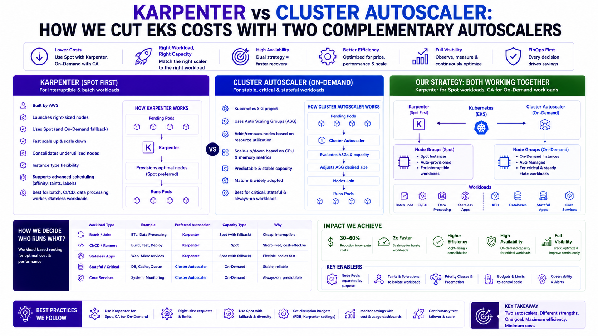
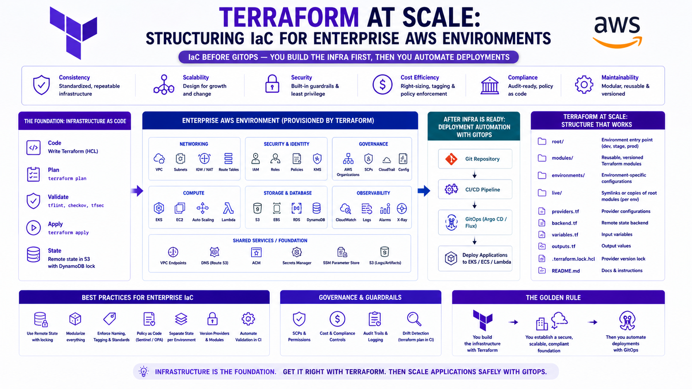
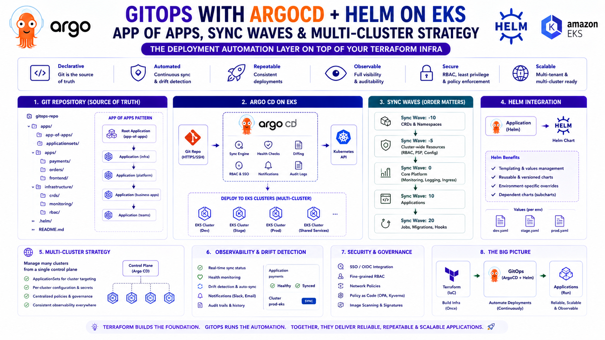
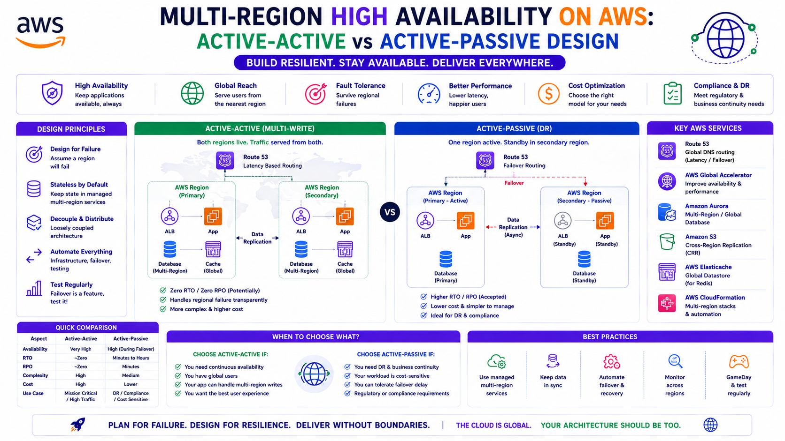
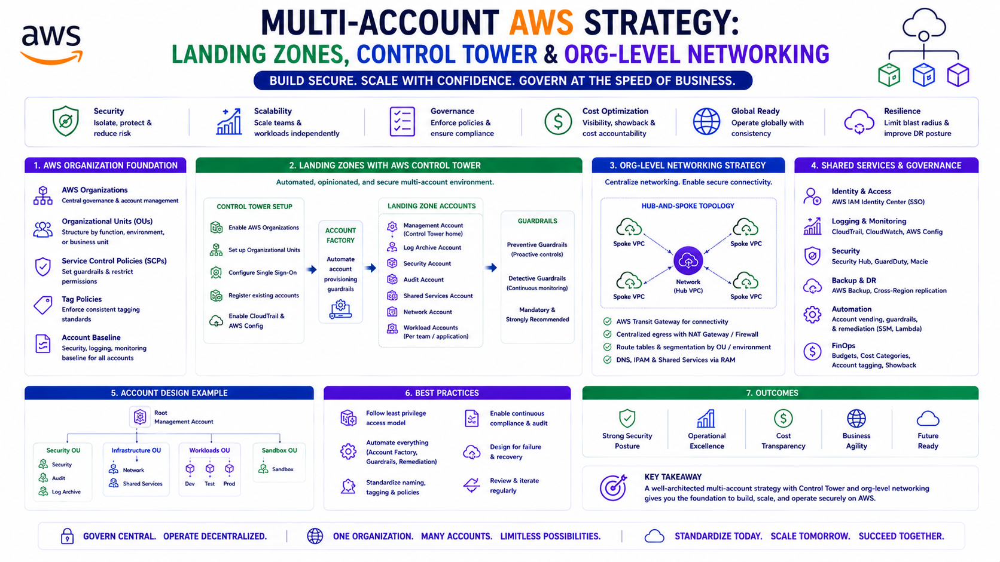

Technical Blog
Architecting for the Real World: AWS Deep Dives, Production Scaling Patterns, and the AI-Driven Cloud.
Seven-part series covering VPC fundamentals through enterprise-grade security architecture.

Master the foundations of AWS networking. Learn about subnets, route tables, IGWs, and the famous 'Rule of 5' reserved IPs.

Dive deep into Transit Gateway, PrivateLink, Global Accelerator, and cross-region peering for enterprise-scale workloads.

Cost & Architecture Trade-offs. A comprehensive comparison of secure internet and service connectivity patterns in AWS.

Mesh vs. Hub-and-Spoke. A deep dive into choosing the right connectivity strategy for enterprise-scale AWS environments.

Mastering Route 53 Private Hosted Zones, Resolver Endpoints, and cross-account DNS resolution.

Every enterprise AWS journey eventually reaches the hybrid connectivity question: how do your on-premises systems securely connect to AWS?

DevSecOps angle: Layered defense-in-depth, extending Gateway Load Balancer patterns for enterprise security.
IAM, GuardDuty, WAF, and the defence-in-depth model for regulated AWS environments.

Building secure, cost-optimised infrastructure. A masterclass on OIDC, Permissions Boundaries, and Zero-Trust identity.

Beyond prevention: A deep dive into continuous monitoring, automated threat response, and application-layer protection using native AWS security services.
ECS vs EKS, production cluster design, GitOps, autoscaling, and IaC at enterprise scale.

Navigating the container landscape. Choosing the right abstraction level for your enterprise workloads based on scale, cost, and operational overhead.

The full EKS blueprint — three-tier node groups, namespace isolation with NetworkPolicies, RBAC, Helm values hierarchy, and zero-downtime upgrade patterns.

The Rabobank hybrid pattern — Nginx+NLB for 33 microservices, ALB for ArgoCD, NLB passthrough for Amazon MQ — with full Terraform, cost comparison, and 7 production anti-patterns.

Three-tier compute: Cluster Autoscaler for On-Demand baseline, Karpenter for Spot. Complete Terraform, Helm, conflict prevention, interruption handling, and the real cost levers from Rabobank.

Layered repos, S3 remote state with DynamoDB locking, opinionated modules, plan-on-PR CI/CD with approval gates, and daily drift detection from a production EKS platform.

App of Apps bootstrap, ApplicationSet generators, Sync Waves for ordered rollout, multi-cluster management, RBAC with SSO, Image Updater, and Notifications. Full working YAML from a production EKS platform.
CloudWatch, X-Ray, OpenTelemetry, and the full observability stack for production EKS platforms.
Cloud cost ownership from a FinOps Certified Practitioner — tagging strategy, Spot compute, Savings Plans, networking optimisation, and the operating model that makes savings stick.
Multi-region, high availability, and global-scale architecture patterns — the decisions that determine whether your platform survives its worst day.

Route 53 failover routing, Aurora Global Database, DynamoDB Global Tables, TGW peering, Global Accelerator, chaos engineering with FIS, and the decision framework for choosing between Active-Passive and Active-Active.

AWS Organizations and OU design, Service Control Policies, Control Tower Landing Zones, Account Factory for Terraform, centralised networking with TGW + RAM, and a centralised security account model for governance at scale.
Standalone posts on specific production problems, incidents, and the non-obvious solutions that came from operating real systems.